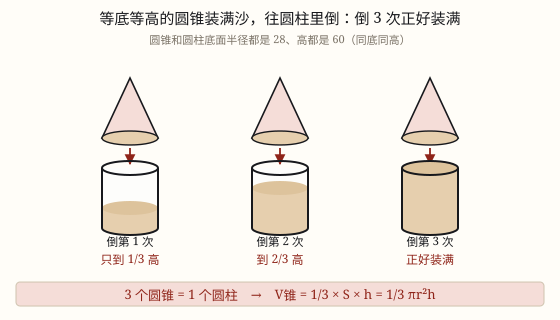

圆柱和圆锥的体积
把圆柱切成许多小块拼成近似长方体，底面积不变、高不变，所以 V = Sh = π r^2 h。
| 所属主题 | 立体图形 |
|---|---|
| 所属模块 | 图形与几何 |
| 课标学段 | 第三学段（5~6年级） |
| 前置知识 | 体积和体积单位与不规则物体的体积 |
| 核心素养 | 空间观念推理意识运算能力量感 |
教材定位
人民教育出版社《2024年版》
对应六下第 3 单元「圆柱和圆锥」：圆柱的体积。；对应六下第 3 单元「圆柱和圆锥」：圆锥的体积。
课标要求
| 图形与几何·图形的认识与测量 | 认识长方体、正方体和圆柱，了解这些图形的展开图，探索并掌握这些图形的体积和表面积的计算公式，认识圆锥并探索其体积的计算公式，能用这些公式解决简单的实际问题。 印刷第 33 页 行为动词：掌握 |
|---|---|
| 图形与几何·图形的认识与测量 | 在图形认识与测量的过程中，进一步形成量感、空间观念和几何直观。 印刷第 33 页 行为动词：感悟 |
说明
圆柱的体积，其实我们早就有一半答案了。六年级上册学圆面积时用过一招——化圆为方：把圆平均分成很多小扇形，一正一反拼起来，拼成一个近似长方形，长是 π r、宽是 r，面积 π r^2。圆柱只是在圆的基础上「往上长高」了，用同一招就能解决。
具体做法：把圆柱的底面平均分成很多小扇形，沿着这些半径把整个圆柱竖着切成很多块细长的「扇形柱」，然后一正一反地拼起来。切得越多，拼出来的形状越接近一个长方体。
剪和拼都只是「搬家」，体积一点没变。再看这个长方体：它的底面积就是圆柱原来的底面积 S = π r^2，它的高就是圆柱的高 h。长方体体积 = 底面积 × 高，所以圆柱的体积 V = Sh = π r^2 h。
这条公式和长方体、正方体是同一个公式：凡是从上到下一样粗的柱体，体积都等于底面积乘高。所以 V = Sh 不用单独背，它只是「一层一层往上叠」这个想法的通用写法。
计算时按顺序来：先算底面积 π r^2，再乘高。别把 2π r（底面周长）当成底面积，那是给圆柱「做围裙」用的，不是装东西用的。
（圆锥的体积）
圆锥有一个圆形的底面和一个尖尖的顶点，侧面是弯的。它和圆柱是「亲戚」：只要等底等高（底面一样大、高也一样），两者的体积就有一个非常整齐的关系。
这个关系靠实验量出来：拿一个圆锥和一个等底等高的圆柱，圆锥装满沙子往圆柱里倒。倒 1 次，圆柱里只有三分之一高；倒 2 次，到三分之二；倒 3 次，正好装满，第 4 次就倒不进去了。也就是说，3 个同样的圆锥才装得满 1 个等底等高的圆柱。
反过来写就是：圆锥的体积 = 底面积 × 高 × 1/3，即 V = 1/3Sh = 1/3π r^2 h。这个三分之一不是算出来的，是倒出来的——小学阶段只要做过这个实验、记住这个结论就够了，不用去推导。
等底等高时，还可以把体积想成 4 份：锥 1 份、相差 2 份、柱 3 份、合起来 4 份。已知其中一个，另外几个马上就能算出来：锥的体积乘 3 是柱，柱的体积除以 3 是锥，两者相差的是锥的 2 倍。
计算顺序和圆柱一样：先求底面积 π r^2，再乘高，最后乘 1/3（也就是除以 3）。最容易漏的就是这个三分之一，算完一定回头看一眼。
使用场景
饮食与配比：圆柱形水杯、奶茶杯能装多少毫升，先算体积再换算成毫升。
购物消费：易拉罐上标着「330 毫升」，装不装得下，算一算容积就知道标签有没有夸大。
工程建造：圆柱形水泥柱、桥墩要用多少混凝土；圆形管道里能流多少水，都算圆柱体积。
农业生产：圆柱形粮囤、蓄水池能装多少粮食或水，按体积估算。
计量与估算：一根圆木、一段钢材有多重，先算体积再乘每立方米的重量。
（圆锥的体积）
饮食与配比：冰淇淋蛋筒能装多少冰淇淋、圆锥形纸杯能装多少爆米花，算的都是圆锥体积。
工程建造：工地上的圆锥形沙堆、石子堆有多少方，用它估算用料和运费。
农业生产：收割后的圆锥形麦堆、谷堆，量出底面周长和高就能估出重量。
计量与估算：漏斗的容量、圆锥形帐篷占的空间，也可以按圆锥体积估。
校园生活：做圆锥形纸帽、圣诞树模型，算用纸量和容积时都会碰到它。
注意点
先算底面积，再乘高。π r^2 里的 r^2 是 r × r，不是 r × 2。
直径要折成半径。底面直径 8 厘米，r = 4 厘米，别把 8 直接平方。
别把侧面积公式混进来。2π rh 算的是「包一层」的面积，π r^2 h 才是「装多少」。
体积单位和容积单位要会换：1\text dm^3 = 1\text L，1\text cm^3 = 1\text mL，1\text m^3 = 1000\text dm^3。
管子用内直径。算「能装多少水」量里面，算「用多少料」量外面，别搞混。
（圆锥的体积）
千万别漏三分之一。等底等高的圆锥体积是圆柱的三分之一，写成底面积乘高就变成圆柱了，结果会大 3 倍。
「等底等高」是前提。底面不一样大、或者高不一样，就不能用 3 倍关系。
底面给的是直径要先折半。直径 6 厘米，r = 3 厘米，别把 6 直接平方。
是除以 3，不是除以 2。除以 2 是三角形、梯形面积的做法，圆锥是除以 3。
结果带立方单位，\textcm^3、\textm^3；要换容积单位时，1\text cm^3 = 1\text mL，1\text dm^3 = 1\text L。

图 1：同一个圆锥倒三次，才把等底等高的圆柱灌满——这个三分之一是倒出来的
为什么是这样

图 1：切得越细，拼出来越像长方体；底面积和高都没变，所以体积是「底面积 × 高」
算理推导
先回忆圆面积那一招：把圆平均分成很多小扇形（像切披萨），一正一反拼起来，就拼成一个近似长方形，长是半个周长 π r、宽是半径 r，面积是 π r × r = π r^2。分的份数越多，拼出来的边越平直。
圆柱只是这个圆「往上长高」了。所以同样把底面分成很多小扇形，沿着这些半径竖着切下去，整个圆柱就被切成很多块细长的「扇形柱」。
把这些小块一正一反拼起来：底面拼成了那个近似长方形，整个立体就变成一个近似长方体。切得越多，侧面的锯齿越小，越接近真正的长方体；但不管切多少块，用的还是原来那些料。
找对应关系：长方体的底面积，就是原来圆柱的底面积 S = π r^2；长方体的高，就是圆柱的高 h。剪开重拼只是搬家，体积没有增减。
长方体体积 = 底面积 × 高 = Sh，所以圆柱体积也是 Sh。把底面积换成 π r^2，就得到 V = π r^2 h。这和长方体、正方体是同一条公式，凡是上下一样粗的柱体都适用。
（圆锥的体积）
先准备好两个容器：一个圆锥、一个圆柱，要求等底等高——把圆锥放进圆柱里，底面正好重合、尖正好顶到圆柱的上口，这才算等底等高。
圆锥装满干沙（或水），用直尺刮平口，倒进空圆柱。倒第 1 次：圆柱底部只积起浅浅一层，大约三分之一高。
再装满圆锥，倒第 2 次：沙面升到大约三分之二高，还差一截才到杯口。
再装满圆锥，倒第 3 次：圆柱正好装满，平平齐口；再倒第 4 次就溢出来了。做了 3 次才装满——这就是整件事的关键。
3 个同样的圆锥才装得满 1 个等底等高的圆柱，说明圆锥的体积是圆柱的三分之一。圆柱的体积是底面积乘高，所以圆锥的体积 = 底面积 × 高 × 1/3，也就是 V = 1/3Sh = 1/3π r^2 h。
换成另一对等底等高的圆锥、圆柱再做一遍，还是 3 次装满。这个三分之一只能这样一次一次量出来，小学阶段不用去推导它。由此还得到：锥 1 份、相差 2 份、柱 3 份、合起来 4 份。
动手实验
用一块橡皮泥（或一团湿黏土）捏成一个圆柱，量出底面直径 d 和高 h，算出体积 π r^2 h。再把这块橡皮泥重新捏成一个长方体，量出长、宽、高，算一算 abh。两个结果应该几乎一样——泥还是那块泥，只是换了形状。更准的办法：把圆柱形杯子装满水，倒进长方体的透明盒里，量出水升高的高度，算出水的体积，再和 π r^2 h 对一对。你会发现：形状变了，装的东西一点没变。 （圆锥的体积） 材料：等底等高的圆柱杯和圆锥杯各一个（可用卡纸自制，圆锥的底面直径和高与圆柱相同）、一盘干沙、一支记号笔、一把直尺。步骤：(1) 把圆锥杯装满沙，用直尺刮平口；(2) 倒进圆柱杯，倒完在圆柱外壁沿沙面画一条线，标上「1」；(3) 重复两次，分别标「2」和「3」；(4) 第 3 次倒完，沙面正好齐杯口，第 4 次就装不下了。用尺量三条线，圆柱的高被分成差不多相等的 3 段。再把沙换成水试一次（在圆锥里装水往圆柱里倒），同样 3 次装满，只是水会晃，要慢慢倒。最后换一个更「瘦高」的圆锥——只要与圆柱等底等高，还是 3 次。
按场景的例题
例 1（场景：饮食与配比） 圆柱形水杯能装多少水
一个圆柱形水杯，底面直径 8 厘米，高 12 厘米。它最多能装多少毫升水？（杯壁厚度忽略不计）
解：r = 8 ÷ 2 = 4 厘米；底面积 3.14 × 4^2 = 50.24 平方厘米；体积 50.24 × 12 = 602.88 立方厘米，也就是 602.88 毫升。
答：约 603 毫升（602.88 毫升）。
例 2（场景：农业生产） 圆柱形水泥柱浇多少混凝土
一根圆柱形水泥柱，底面直径 0.8 米，高 3 米。浇一根这样的柱子需要多少立方米混凝土？
解：r = 0.4 米；底面积 3.14 × 0.4^2 = 0.5024 平方米；体积 0.5024 × 3 = 1.5072 立方米。
答：需要 1.5072 立方米。
例 3（场景：物流运输） 圆柱形粮囤的容量
一个圆柱形粮囤，底面周长 6.28 米，高 2 米。它能装多少立方米粮食？
解：先由周长求半径：r = 6.28 ÷ 3.14 ÷ 2 = 1 米；底面积 3.14 × 1^2 = 3.14 平方米；体积 3.14 × 2 = 6.28 立方米。
答：能装 6.28 立方米。
例 4（场景：购物消费） 易拉罐的净含量可信吗
一个圆柱形易拉罐，底面直径 6 厘米，高 12 厘米，标签上写着「净含量 330 毫升」。这个标注合理吗？
解：容积 3.14 × 3^2 × 12 = 3.14 × 9 × 12 = 339.12 立方厘米，约 339 毫升。装 330 毫升后罐里还留了一点空隙。
答：合理：罐子能装约 339 毫升，标 330 毫升留了余量。
例 5（场景：工程建造） 冰淇淋蛋筒能装多少
一个圆锥形蛋筒，底面直径 6 厘米，高 10 厘米。装满冰淇淋大约能装多少立方厘米？
解：r = 6 ÷ 2 = 3 厘米；底面积 3.14 × 3^2 = 28.26 平方厘米；体积 1/3 × 28.26 × 10 = 94.2 立方厘米。
答：约 94.2 立方厘米。
例 6（场景：上学日常） 工地上的圆锥形沙堆
一堆沙呈圆锥形，底面周长 12.56 米，高 1.5 米。这堆沙有多少立方米？
解：r = 12.56 ÷ 3.14 ÷ 2 = 2 米；底面积 3.14 × 2^2 = 12.56 平方米；体积 1/3 × 12.56 × 1.5 = 6.28 立方米。
答：6.28 立方米。
例 7（场景：行程出行） 圆锥形麦堆有多重
一个圆锥形麦堆，底面半径 3 米，高 2 米。每立方米小麦约重 700 千克，这堆小麦大约重多少千克？
解：底面积 3.14 × 3^2 = 28.26 平方米；体积 1/3 × 28.26 × 2 = 18.84 立方米；重量 18.84 × 700 = 13188 千克。
答：约 13188 千克，也就是约 13.2 吨。
例 8（场景：计量与估算） 等底等高的锥和柱
一个圆柱和一个圆锥等底等高。圆柱的体积是 90 立方厘米，圆锥的体积是多少？两者相差多少？如果圆锥的体积是 24 立方厘米，圆柱又是多少？
解：等底等高时锥是柱的三分之一：90 ÷ 3 = 30 立方厘米；相差 90 - 30 = 60 立方厘米，正好是锥的 2 倍。反过来 24 × 3 = 72 立方厘米。
答：圆锥 30 立方厘米，相差 60 立方厘米；圆锥是 24 立方厘米时，圆柱是 72 立方厘米。
常用推论
圆柱的体积 V = Sh = π r^2 h；反过来，h = V ÷ S，S = V ÷ h。
底面积不变时，高扩大到原来的 n 倍，体积也扩大到 n 倍；高不变时，底面半径扩大到 n 倍，体积扩大到 n^2 倍。
长方体、正方体、圆柱的体积统一为 V = Sh（底面积乘高）。
容积单位换算：1\text dm^3 = 1\text L，1\text cm^3 = 1\text mL，1\text m^3 = 1000\text dm^3。
圆锥的体积 V = 1/3Sh = 1/3π r^2 h；等底等高时，圆柱的体积是圆锥的 3 倍。
等底等高时：锥 1 份、相差 2 份、柱 3 份、合起来 4 份。
等底等体积时，圆锥的高是圆柱高的 3 倍。
已知圆锥的体积和底面积，可求高：h = 3V ÷ S；已知体积和高，可求底面积：S = 3V ÷ h。
体积单位换算：1\text dm^3 = 1\text L，1\text cm^3 = 1\text mL。
易错点
错底面直径 8 厘米、高 12 厘米，算成 3.14 × 8^2 × 12 = 2411.52 立方厘米。
为什么错8 是直径，r^2 里的 r 应该是 4。把直径当半径，体积大了 4 倍。
正确3.14 × 4^2 × 12 = 602.88 立方厘米。
错算成 2 × 3.14 × 4 × 12 = 301.44。
为什么错这是侧面积 2π rh，算的是「包一层纸」，不是「装多少」。
正确体积要乘底面积：3.14 × 4^2 × 12 = 602.88 立方厘米。
错底面周长 6.28 米，直接把 6.28 当半径算 3.14 × 6.28^2 × 2。
为什么错6.28 是周长，不是半径。要先 6.28 ÷ 3.14 ÷ 2 = 1 米求出半径。
正确r = 1 米，V = 3.14 × 1^2 × 2 = 6.28 立方米。
错容积算出 602.88，答案写成「602.88 平方厘米」。
为什么错体积和容积是三维的量，单位要立方；平方厘米是面积的单位。
正确602.88 立方厘米，也就是 602.88 毫升。
错底面直径 6 厘米、高 10 厘米，算成 3.14 × 3^2 × 10 = 282.6 立方厘米。
为什么错漏了三分之一，算出来的是等底等高圆柱的体积。
正确1/3 × 282.6 = 94.2 立方厘米。
错把三分之一记成「除以 2」，算成 141.3 立方厘米。
为什么错除以 2 是三角形、梯形面积的做法；圆锥靠装沙实验，是 3 次装满，所以是除以 3。
正确除以 3：282.6 ÷ 3 = 94.2 立方厘米。
错圆锥底面直径 6 厘米、高 10 厘米，配一个底面直径 8 厘米、高 10 厘米的圆柱，还认为「锥是柱的三分之一」。
为什么错两个容器底面不一样大，不是等底等高，3 倍关系不成立。
正确只有等底等高时才成立；底不同就各算各的，先分别求出两个体积再比。
错底面半径 3 厘米、高 10 厘米，算成 1/3 × 3.14 × 3 × 2 × 10。
为什么错把半径的平方写成了半径乘 2。3^2 是 9，不是 6。
正确1/3 × 3.14 × 9 × 10 = 94.2 立方厘米。
直观理解
把圆柱想成一摞圆形纸片：一张纸的面积是 π r^2，摞到高 h，就是 h 张叠起来，体积自然是「一张的面积 × 张数」。切拼成长方体，不过是把这摞纸每层错开半张、让边缘变直，张数和每张的大小都没变，所以体积也没变。 （圆锥的体积） 圆锥和等底等高的圆柱，就像小杯和大壶：小杯（圆锥）舀三次，才把大壶（圆柱）灌满——第一次三分之一，第二次三分之二，第三次齐口。记住这个「三勺装满一壶」的画面，三分之一就再也不会丢。
圆柱体积底乘高，半径平方莫混淆；切成小块拼长方，形状变了体积同。 （圆锥的体积） 等底等高锥与柱，锥一柱三记清楚；三分之一乘底高，三次装满才不误。